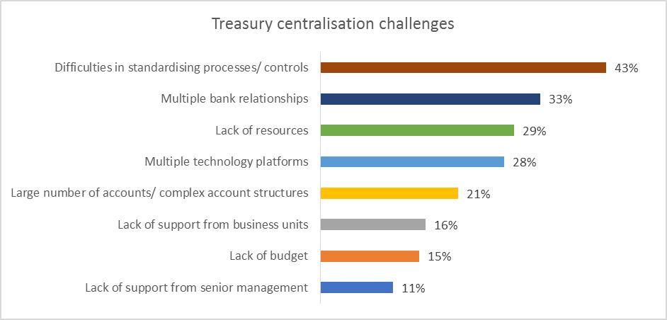

Treasury Insights 2020 - Results of the EACT Survey
Although the EACT Summit sadly could not take place this year, 200 treasury professionals from across Europe shared their thoughts on treasury’s role and priorities as part of the EACT survey. Survey responses were received between 11th March – 15th April 2020, a period which coincided with the start of COVID-19 ‘lockdown’ for many countries. Although some survey participants responded to the survey before the official lockdown in their respective countries, many companies had already implemented measures such as stopping business travel and moving to home working. Markets were also experiencing significant volatility at the start of the survey period, and supply chains had been disrupted. Consequently, it would seem fair to assume that most people responded to the survey in the context of COVID-19-related issues.
Executive Summary
- 200 treasury professionals from across Europe responded to the survey between mid-March and mid-April 2020.
- Cashflow forecasting is the highest priority for treasury, indicated by 55% of respondents, continuing a longer-term theme, and reflecting the importance of liquidity management during the crisis. ·
- 62% use, or plan to use, data analytics, compared with 43% in 2019.
- 35% use, or plan to use application programming interfaces (APIs) to facilitate integration for on-demand or real-time exchange of transactions or data.
- Over half (52%) of treasurers are interested in the opportunities to exchange information in real-time information, and 47% in real-time liquidity and real-time payments and collections.
- 37% reported that working capital management is a significant priority for treasury, but over half (56%) indicated that they have either no role in working capital decision-making, or influence rather than responsibility.
- Although treasury centralisation has been a long-term trend, it remains a priority for 28% of treasurers who responded to this survey. Fragmentation and lack of standardisation across processes and controls, bank relationships and account structures, and technology platforms remain the biggest challenges to centralisation.
- Treasurers are motivated to support their companies’ environmental, social and governance (ESG) agenda, but most of this involvement is at an operational level, such as shifting from manual, paper-based processes (50 percent), reducing business travel and encouraging home working (41 percent).
Treasury Priorities
Cash flow forecasting was the highest treasury priority for 55 percent of respondents. This is not surprising bearing in mind that cash and liquidity profiles, supply chains and customer behaviour were already affected by the pandemic before lockdowns were imposed. The focus on cash flow forecasting is not a ‘crisis phenomenon’, however: the issue has consistently appeared at the top of treasurers’ list of priorities, as reflected in the most recent biannual PwC Global Treasury Benchmarking Surveys in 2017 and 2019 [1].
Likewise, technology and treasury digitisation, and working capital management have remained significant priorities. The value of automation and digitisation has been emphasised by the pandemic, particularly as people rapidly shifted to home working, with manual, paper-based processes becoming all but impossible. Optimising working capital has become essential, not simply improving individual metrics, e.g. days payable outstanding (DPO) and days sales outstanding (DSO) but a holistic approach to optimise liquidity and increase supply chain resilience [2].
Treasury Innovation
Treasurers have always been motivated and engaged by the opportunities to leverage innovative technologies to solve problems and add value to the business in new ways. Even so, there has been a significant jump in treasurers’ current or planned use of new technology capabilities over the past year, a trend that seems likely to have accelerated since the start of the COVID-19 crisis. Sixty two percent of respondents noted that they are already using, or intend to leverage data analytics to create intelligent insights into liquidity and risk dynamics, compared with 43 percent in 2019. Analytic tools becoming more widely available in treasury management systems (TMS) and enterprise resource planning platforms (ERP), as well as specialist solutions. The need for analytics to understand and respond to fast-changing, exceptional market and economic conditions has also been amplified during the crisis.
Likewise, treasurers are increasingly recognising the potential of robotic process automation (RPA) to replace high volume manual input, and enrich the data on which analytics can be performed. In 2019, 24 percent of respondents were using RPA, but in 2020, 46 percent already do so, or are planning to in the short term.
Use of, or interest in, application programming interfaces (APIs) was not covered in previous EACT surveys, but current or planned use of APIs was highlighted by 35 percent of survey participants in this year’s survey. In treasury, APIs are increasingly used to enable the real-time exchange of transactions and data between banks and corporates’ TMS or ERP, and to embed banking and payment services into internal or customer platforms.
The biggest increase in treasurers’ current and planned use of innovation is artificial intelligence (AI), which has grown from 6 percent in 2019 to 22 percent in 2020. AI capabilities are increasingly part of banks’ and technology vendors’ solutions such as predictive analytics, cash flow forecasting, bank account reconciliation and fraud prevention tools.
Themes of Interest
“Treasury On Demand” is one of the themes of this year’s Journeys to Treasury report, and the trend towards ‘real time’, including transactions, processes and data exchange has become more apparent in 2020 than in any previous year. Fifty two percent of respondents expressed an interest in real-time information, and 47 percent in both real-time liquidity and real-time payments and collections. In reality, these themes, as well as APIs (for real-time integration) and 24/7 availability, are closely related, and will create new demands on banks and technology vendors to offer real-time solutions, such as for liquidity and risk, and the ability to handle real-time data. There are also procedural implications as treasurers need to consider how they will adapt their processes and decision-making to reflect the availability of real-time data.
Involvement in Working Capital Management
Treasurers’ involvement in working capital management, and the value of treasurers’ contribution in this area, is explored as one of the themes in this year’s Journeys to Treasury report, and was covered in the recent COVID-19 special edition [3]. Although identified as a priority by 37 percent in the first section of the survey, treasurers report varying degrees of influence and responsibility for working capital. For example, 45 percent note that they are involved in working capital, but do not have direct responsibility. Only 30 percent are responsible for working capital.
As protecting both physical and financial supply chains has become a higher priority, while market liquidity may be more difficult to access in many cases, treasurers are likely to pay more attention to working capital and potentially take on a greater role.
Treasury Centralisation Challenges
Although many treasurers have centralised their treasury functions at a regional or global level, centralisation remains a challenge for many, particularly those with a decentralised organisational structure and/ or those that are highly acquisitive. Twenty eight percent of respondents in section 1 indicated that centralisation would be a priority over the next one or two years.
The biggest obstacles to centralisation involve problems with fragmentation and lack of standardisation in areas such as processes and controls (43 percent), bank relationships and account structures (33 percent and 21 percent respectively) and technology platforms (28 percent). Some of these issues are explored more fully in this year’s Journeys to Treasury report.
Lack of resources, budget and organisational support, both at senior management and business unit level, are also obstacles to centralisation. However, the COVID-19 crisis could boost this support and availability of resources. Treasuries that have achieved a high level of centralisation, standardisation and automation have found it easier to adapt quickly to new business practices during the crisis. The importance of managing liquidity and risk at a group level has also been emphasised, particularly as many business units’ liquidity position has changed markedly, making the business case for centralised liquidity and risk management more compelling.

Treasurers' Involvement in the ESG Agenda
While treasurers’ primary responsibilities are around liquidity and risk, many organisations are implementing a group culture in which every employee and department plays a role in the environmental, social and governance (ESG) agenda. While COVID-19 has diverted some immediate attention from the need to tackle climate change and environmental and social sustainability, it remains a primary strategic focus for most organisations. The survey responses reveal that most of treasurers’ involvement in ESG is at an operational level, such as shifting from manual, paper-based processes (50 percent), reducing business travel and encouraging home working (41 percent). Given that these have become normal business practice during the early phases of the pandemic, it seems highly likely that these efforts will continue and become more firmly embedded into organisations’ working cultures.
Conclusion
The COVID-19 crisis has highlighted the importance of treasury’s role in managing existential issues around liquidity and risk, the value of digitisation to support automated processes and decision-making, and the potential for real-time data and transactions to accelerate supply chains and cash cycles. Real-time and on-demand intelligence also enhances treasurers’ visibility over, and response to, fast-changing conditions. The crisis has also rapidly changed the way that treasury functions operate, perhaps heralding a more permanent change in working practices.
Treasurers have been adaptable and responsive to the immediate demands of the crisis. At the same time, their priorities, challenges and areas of interest have remained largely consistent. This suggests that treasurers are motivated by a longer-term, strategic view of the needs of their business, as opposed to reacting impulsively to the day-to-day demands of the crisis. The survey results illustrate, however, the growing role that technology innovation is likely to play in equipping treasurers with the automation and decision-making tools they need to fulfil their responsibilities more effectively, and deliver greater value to the organisation.
2020 is the fifth anniversary year of the Journeys to Treasury partnership, comprising BNP Paribas, European Association of Corporate Treasurers (EACT), SAP and PwC. We are marking this special alliance with a ‘Journeys to Treasury Bitesize’ series, providing topical insights and support for treasurers as they navigate this challenging period.
Articles
.png "The LEI: Unlocking the Benefits of a Secure Payments Ecosystem for Corporate Treasurers")
The LEI: Unlocking the Benefits of a Secure Payments Ecosystem for Corporate Treasurers
The EACT has been advocating for a digital identity for Corporates for many years now. We believe that, Corporates, like individuals, must have a single identity which help them to identify itself and identify third parties as well in this digital era.
Read.png "LkSG Relevant for Treasury on a Case-by-case Basis")
LkSG Relevant for Treasury on a Case-by-case Basis
The Supply Chain Due Diligence Act (LkSG) creates the legal framework to improve the protection of the environment and human rights along German supply chains. GACT spoke to Dr. Julia Sitter (White & Case LLP) about the relevance and need for action by treasury departments.
Read.png "CMU, The Come-Back!")
CMU, The Come-Back!
The Capital Market Union, which was one of the main objectives of the Vander Leyen Commission, is back in the limelight, and is likely to become a priority for the next Commission next summer.
Read.png "What Will be the Corporate Treasurer's Priorities for 2024?")
What Will be the Corporate Treasurer's Priorities for 2024?
General insights into the common priorities of corporate treasurers that will still be relevant in 2024.
Read.png "Counterparty Risk Assessment by Treasurers")
Counterparty Risk Assessment by Treasurers
François Masquelier lists some comprehensive steps to best assess counterparty risks.
Read